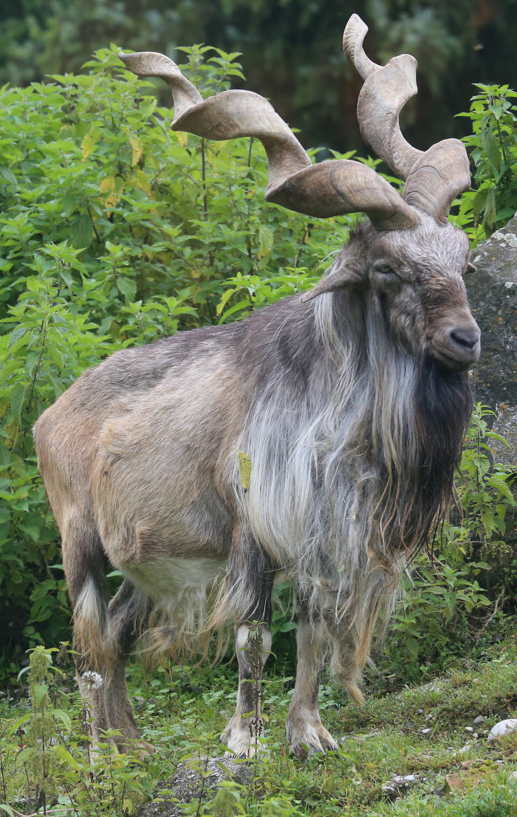

Dachigam National Park
Location : 22 km from Srinagar
Established in : 1981
Area : 141 km2
Flora : The mountain sides below the tree line are wooded. Most of this coniferous forest consists
of broad leaf species. Interspersed between these are alpine pastures, meadows, waterfalls and scrub vegetation with
deep gullies, locally known as Nars, running down the mountain face. Most of the grasslands and meadows, except in
the harsh winters, are covered with coloured flowers.
Fauna : The main animal species that Dachigam is known for is the hangul, or the Kashmir stag. Others
are musk deer (roose kat), leopard, Himalayan serow, Kashmir grey langur,
leopard cat, Himalayan black bear, Himalayan brown bear, jackal, hill fox, Himalayan weasel, yellow-throated marten,
jungle cat, long-tailed marmot, otter, etc.
Bird species found are cinnamon sparrow, black bulbul, Himalayan monal, golden oriole, minivet, pygmy owlet, woodpecker,
babbler, redstart, wagtail, koklass pheasant, chough, orange bullfinch, kashmir flycatcher, Tytler's leaf warbler,
streaked laughingthrush, Himalayan rubythroat, wallcreeper, black-and-yellow grosbeak, Himalayan griffon vulture,
bearded vulture, red-billed blue magpie, titmouse, etc.

Dachigam National Park

Kashmir stag

Long tailed marmot
Kishtwar National Park
Location : Kishtwar district, bounded to the north by Rinnay river, south by Kibar Nala catchment,
east by main divide of Great Himalaya and west by Marwah river.
Established in : 1981
Area : 2190.50 km2
Flora : Silver fir 'Abies pindrow' and spruce 'Picea wallichian', mixed with cedar Cedrus deodar
and blue pine Pinus griffithii are predominant from 2400m to 3000m. At lower altitudes (1,700-2,400m) occur
nearly pure stands of cedar and blue pine, and moist temperate deciduous forest.
Fauna : Himalayan snowcock and the brown bear

Kishtwar National Park

Brown bear

Himalayan snowcock
Qazinag National Park
Location : Baramulla district
Established in : 2000
Area : 160 km2
Flora : Vegetation in Kazinag is dominated by coniferous forests with deodar, fir, spruce and kail.
Fauna : Around 20 species of mammals, including some which are rare, threatened or endangered are found.
Key animal species sighted are markhor, Himalayan musk deer, Himalayan brown bear, Himalayan black bear, Indian
leopard, Himalayan marmot, yellow-throated marten, and Kashmir flying squirrel.
About 120 species of birds including the golden eagle, Impeyan or monal pheasant, cheer pheasant, sparrow hawk, snow
pigeon, cuckoo, Himalayan pied kingfisher, lesser pied kingfisher, nutcracker, jackdaw, long tailed minivet, sooty
flycatcher, Kashmir red breasted flycatcher and yellow throated martin.

Qazinag National Park

Yellow-throated marten

Markhor